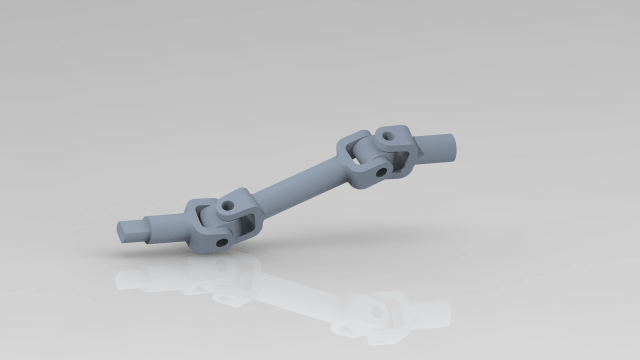
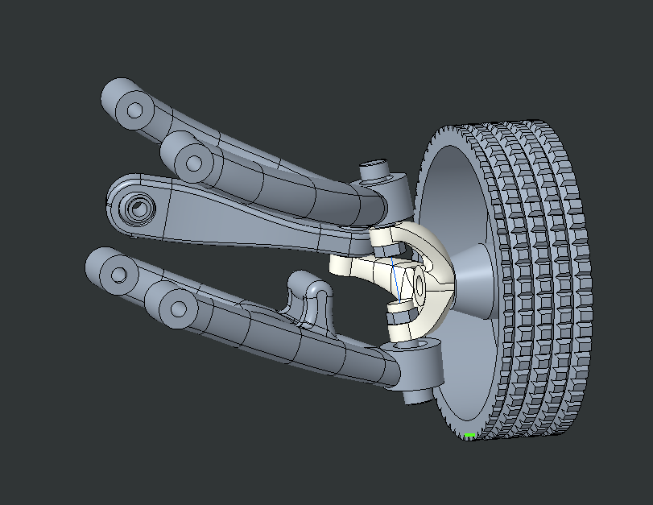
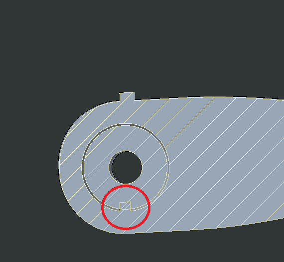
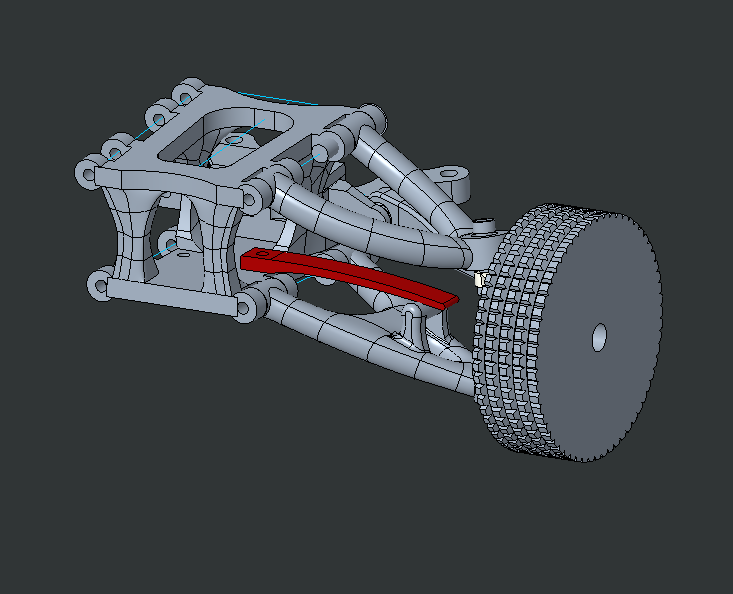
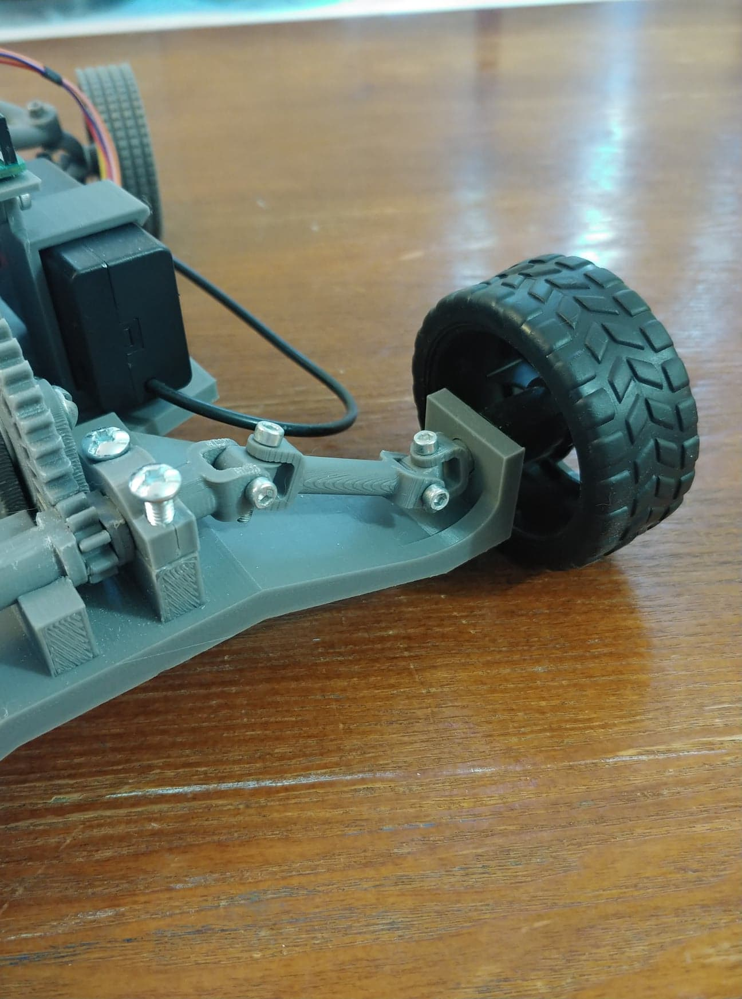

My end goal is to automate an RC car, but first I needed to build the car.
This project let me combine mechanical engineering with the C++ I was learning. To challenge myself on both fronts, I decided to give it full suspension. That would force me to write a solid algorithm to handle the uncertainty that dynamic suspension introduces, and it would give me more practice with highly interconnected models. Besides, designing suspension isn't that hard, right? Right? ...oh no.

First, I designed a CV joint. I hadn't settled on the final geometry, but I knew a CV joint would give me much more freedom than a solid axle. After some research, I chose U-joints because they seemed to be the only reasonable option for printing, and even then I had doubts. I needn't have worried: they were easy to model and turned out much stronger than I had hoped.

The first real hurdle was the upright joints. A full range of motion required a ball joint. Looking at commercial RC cars, I found that most, if not all, use purchased ball joints for these connections. Since I wanted something cheaper and customizable, I decided to design my own.

After some trial and error, I figured out how to print usable ball joints in place, in any orientation. The only catch was a small bridge connecting the ball to the part below. It gave the printer a starting point for the ball and produced joints with tighter clearances and less slop. After printing, I broke the bridge by rolling the ball in its socket until it moved smoothly.
Next came the fun part: the suspension itself. I used 100% Ackermann geometry to minimize tire slip in turns; there were already enough unknowns to program around. I also chose slightly positive camber and no kingpin inclination to keep the steering simple.

I didn't have any springs on hand, so I modeled a compliant 3D printed beam as a placeholder. The idea was to hold the suspension at a fixed position so I could build and test a prototype without dealing with much suspension travel. Once printed, it worked much better than expected, providing resistance through the suspension's full range of motion. It also packaged neatly into the suspension, so I kept it in the current design. I may still swap it out later, but I am more than happy with it for now.

At this stage of the design, the rear suspension is still rigid. I designed it quickly to get a working prototype built before the semester started, and I intend to replace those components when I have a good chunk of time.

Special thanks to www.buildyourownracecar.com for being such a great resource on suspension design.